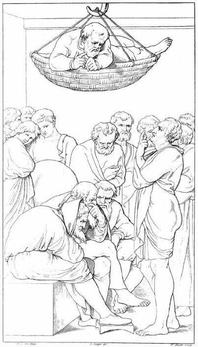
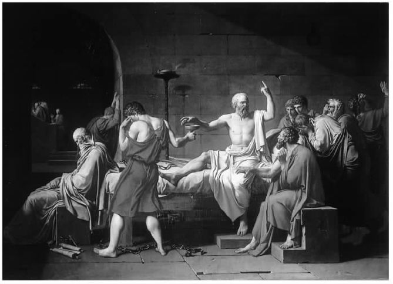

柏拉图（约前427—前347）并非古希腊文明史中第一位重要哲学家，但是他是第一位有大量完整作品传世的古希腊哲学家。印度哲学典籍《吠陀经》和大部分《奥义书》的出现都早于柏拉图的作品，但是它们的作者是谁，它们是如何写成的，这些我们几乎一无所知。佛陀生活的年代早于柏拉图，但是究竟早多久学术界尚无定论；幸存的有关佛陀生平和思想的最早记述都是在佛陀死后几百年才出现的。中国的孔子也先于柏拉图（生于柏拉图之前一个世纪的中期）。同样，据我们所知，孔子也并无著述。那本著名的《论语》也是编于孔子死后。
柏拉图的所有作品都以对话形式出现，其中大部分妙语连珠，风格口语化。当然有时主人公也会作长篇大论。这些作品中有二十几种经确认为柏拉图所写，还有更多的一些不能确定。在已被确认的作品中，有两种的篇幅要比其他的长得多，更适合被看作是由一系列对话组成。（这两本书分别是《理想国》和《法律篇》。两书谈论的中心话题都是对理想的政治体制的追求。）柏拉图可读的书很多，而且大部分都很容易买到，译后版本价格也比较便宜。至于这些作品的难度就各不一样了。有些作品与我们下文即将细述的一本差不多，而另一些如《智者篇》这样的，即使是那些博览群书的人看了也会时不时大伤脑筋，心中茫然。
柏拉图的对话作品有一个显著特征，即几乎所有对话中都出现了苏格拉底，虽然苏格拉底并不总是谈话的中心人物。在名为《格黎东篇》 [1] 的对话中，苏格拉底不仅参与了讨论，而且讨论的是关于当他发现自己遭遇困境时应该怎么做的问题。因此，我们需要了解一下苏格拉底其人以及他如何遭遇对话开始时说到的困境，即身陷雅典监狱，等待即将到来的处决。
苏格拉底生于公元前469年，卒于公元前399年。毫无疑问他魅力无穷，生活方式则有些古怪。给人的印象是只要有人愿意加入，他便整日与人进行辩论，不取报酬，因为他安于因此而带来的贫穷。他的辩论伙伴包括许多比较富有、因此也比较空闲的雅典年轻人，其中就有柏拉图。柏拉图对苏格拉底的仰慕促进了前者哲学事业的发展，并激发他创作了大量作品。这些作品使苏格拉底和柏拉图两人同样名垂千古。
我们了解苏格拉底的思想并非全部根据柏拉图的作品，但是到目前为止绝大部分都是的，因此要明确区分两人的观点并非易事。不用怀疑，柏拉图有时努力将苏格拉底作为一个历史人物进行刻画，有时则将苏格拉底这个人物形象作为一种语言手段来表述自己的哲学观点，但是这两者之间并不总是有清晰的界线。学者们如今似乎大体上达成共识，认为苏格拉底真正关注的是关于公正和美德的伦理问题（“我应该怎样生活”有时被称为“苏格拉底问题”），并且苏格拉底经常探究他的雅典同胞们是否真正理解这其中涉及的问题，他们对这些问题的理解是否如同他们自己声称的那样深。他自己对这些问题也并不总是完全理解的——不过每当这时，苏格拉底便不会声称自己理解。
这样做似乎很容易为自己树敌。因此上述关于苏格拉底种种活动的描述与后面发生的事情完全不冲突：三个雅典公民以毒害雅典年轻人为由起诉苏格拉底。如果把公众对苏格拉底的敌意比作一座冰山，那么这三个雅典公民就是冰山的顶端。苏格拉底被以微弱多数判为有罪 [2] ，并被处以死刑。在《苏格拉底的申辩》中柏拉图就记录了苏格拉底在审判过程中所作的演说（尽管题目直译应该是“苏格拉底的道歉”，但苏格拉底的言辞丝毫没有抱歉之意），为自己申辩时、法官裁决后以及最终宣判后各一篇。
苏格拉底并非是在审判后被立即执行死刑的。审判进行时一个祭祀庆典正好开始，只有当城邦国家派往得洛斯岛的一艘船返回雅典后，庆典才能结束。这个庆典具有重要的宗教意义，在船未返回之前不得执行死刑。因此在这段时间，苏格拉底必须待在监狱。在这段时间里，他的朋友们刚好有足够的时间定期来探望他，结识狱卒，并酝酿一个行动计划。随着船返航时间的临近，把行动计划告诉苏格拉底的任务就落在了格黎东身上：他们打算贿赂狱卒，这样苏格拉底就可以逃离雅典到别处去，比如去特答利亚 [3] 。格黎东在那儿有朋友，将会接待苏格拉底，并为他提供庇护。

图2并非所有人都像柏拉图一样为苏格拉底所折服。在与苏格拉底同时代的喜剧家阿里斯托芬的《云》中，苏格拉底是以一个整天躺在篮子里摇晃（以便处于一个更好的位置来研究天体现象）、自视甚高的怪人形象出现的。
在《格黎东篇》中柏拉图记录了格黎东与苏格拉底的辩论以及苏格拉底的回应。尽管这则对话写于二千四百年前，但出人意料的是它读起来并不那么令人吃惊。你也许不同意苏格拉底的全部观点——比如许多读者会认为苏格拉底夸大了国家对个人的要求，但是事实上他提出的所有观点，对任何一个曾经面对艰难抉择的人来说都不陌生。柏拉图谈到爱，我们就知道他谈论的角度与我们不同；读柏拉图的宇宙论，我们就如同回到了完全不同于今的时代；但是对话中对“在这种情况下我应该做什么”这个具体伦理问题的讨论似乎就发生在昨天。在第一章，我提到我们每个人都或多或少是个哲学家，因此有的哲学离我们很近。下文我就举一个源自古希腊的例子。
开始前先说句题外话。不管你使用哪个版本、哪种语言的译本，柏拉图作品的每个部分都有专门的标注方法 [4] 。这种标注方法最早源自1578年文艺复兴时期一个版本中使用的分页方法，被称为斯特凡努斯标注法（斯特凡努斯是其编辑亨利·埃蒂安纳的拉丁名字）。现代印刷的任何版本中也都使用这种标注法，或是标在空白处，或是标在每页上方。本章我就将一直使用这种标注法。
第一页前后（43a—44b）说明了事情发生的背景。格黎东说他已打通看守这方面的关节。苏格拉底回答说到他这个年纪就不应该因为自己要死而抱怨太多。然后格黎东的劝说便开始了。他首先如一般人都会做的那样，告诉苏格拉底朋友们非常珍惜他，然后暗示苏格拉底应该会在意回报朋友们的深情：朋友们的名誉将会岌岌可危，因为如果他坚持待在监狱并被处死，人们会认为朋友们不愿花钱买回他的自由，让他逃亡。
随后格黎东又急急忙忙提出大量迥异的观点（这些观点都没有充分展开。《格黎东篇》的语言组织得并不严谨，反而更像平常的聊天）。苏格拉底回答说一个人不应该关心“众人”怎么想，应该在意的是那些洞晓事实的理智之人是怎么想的。“像你说的那样，我们承受不起，”格黎东说，“众口铄金啊！”“相反，”苏格拉底说，“就真正重要的是什么这一点而言，多数人的意见根本没有什么影响力可言。”很明显，真正关键的问题是人是睿智的还是愚蠢的（44d）。
我怀疑许多读者读到这个观点会吃惊。苏格拉底所谓的智慧是什么？智慧应该是唯一真正重要的事吗？我们应该一直记着这个问题，时刻注意后面的对话中任何有助于我们理解这个问题的部分。不过格黎东却忽略了这个问题，又回到先前的话题，重新谈起苏格拉底的做法会给朋友们带来的后果。苏格拉底是不是认为如果自己逃跑了，他的朋友就会有被报复的危险？是的，苏格拉底好像是这么认为（在53a/b中，苏格拉底又强调了可能会给朋友带来危险的问题）。这肯定在很大程度上消解了格黎东论点的说服力：如果做 某事与不 做某事一样，给朋友带来的后果很可能都不好，那么再利用如果不做某事就会给朋友带来不好的后果来说服苏格拉底就没有什么意义了。
可以理解，此时格黎东又担忧又心焦，说话的篇幅开始变长（45a—46a）。他情绪激动，语无伦次，将自己所有剩余的弹药都发射了出来。苏格拉底不应该考虑是否会给朋友带来风险，也不应该考虑费用问题——无论怎样，费用都不会那么高。他也不应该担心逃离雅典、在他国流亡就意味着回到了他在被审判时所说的情形之中 [5] 。（在46b—46d和52c中，我们很快会发现这根本无法说服苏格拉底。对于苏格拉底来说，始终如一、忠于自己并忠于自己所作所为的理由是非常重要的品德。）
格黎东接着又说，苏格拉底本可挽救自己的生命却选择放弃，这样做是错误的，这样做恰恰满足了敌人的意愿。不过格黎东没有告诉我们他认为苏格拉底错误仅仅是因为 这样做就意味着敌人胜利了，还是因为这样做本身就是错的——如同有些人认为自杀这种行为本身就是错的一样，又或是因为其他原因。格黎东心中所持的是哪个原因实际上决定了他这句话的含义，不过他当时的思路肯定并不严密。到这时，格黎东变得极度激动。他先是指责苏格拉底不关心自己的孩子，后来又说苏格拉底是个懦夫（45d）。（与苏格拉底真正要做的事所需要的勇气相比，格黎东对苏格拉底的第二个指责显得尤其荒谬；而关于孩子的事，苏格拉底在后面将会谈到。）精疲力竭之后，格黎东又开始抱怨苏格拉底的做法将损害朋友们的名誉。他乞求苏格拉底同意自己的观点，然后就打住话头。
因为痛苦和担心，格黎东的最后几段话很是无礼。苏格拉底对此并未在意。他和善地说到了格黎东对自己的好意，并且控制了对话的发展。对话的行文思路马上就平缓下来，观点组织也更加严谨。他回应格黎东刚才说的第一点，即关于荣誉的问题。他问我们应该尊重谁的意见，睿智之人还是愚笨之人，大多数人还是少数内行人？格黎东很快顺着苏格拉底的思路给出了明确的答案。当苏格拉底全神贯注投入辩论之时，他的对手往往就会像格黎东那样。因此，在这里我们不应该听从大多数人的意见，而应该听从那些懂得什么是公正、如何正确行事、如何幸福生活或是以应该的方式生活的人的意见。否则我们的灵魂会受到伤害，正如在涉及健康问题时，不听从医生而听从大多数人，我们的身体就会受到损害。关键问题是苏格拉底试图逃跑是否正确，所有关于钱、名誉以及抚养孩子这档子事都并不是真正重要的（48c）。
让我们暂停片刻。读哲学之一忌是对其完全接受。难道苏格拉底刚才的话中不带一丝道德狂热的痕迹？他的灵魂具体会受到怎样的伤害？为什么灵魂受伤会让人觉得如此可怕？如果朋友的荣誉将受到损害，如果将无法亲自抚育孩子成人，难道苏格拉底会不愿意冒点风险，让自己的灵魂稍稍受些伤害？毕竟，苏格拉底看不起那些不愿为朋友和家庭而甘受肉体伤害的人。不可否认，我们已被告知（47e—48a），灵魂，确切地说，“我们自身的那个部分，不管叫什么，总之是关于公正和不公正的那个部分”，比身体宝贵。不过没人告诉我们灵魂为什么或者以何种方式比身体宝贵，也没有任何解释来说明为什么灵魂会如 此 重要以至于一旦灵魂可能受到伤害，诸如朋友的名誉或孩子的幸福等小事可以马上不顾？另外，如果孩子没有得到很好的照顾，“他们 自身的那个部分，不管它叫什么，总之是关于公正和不公正的那个部分”会不会受到伤害呢？看起来苏格拉底需要一个新的辩论伙伴，一个可能已经开始寻求其中一些问题的答案的伙伴。
不过既然苏格拉底认为逃跑是错误的，还是让我们听苏格拉底说完，对整体情况有一个全面了解。首先他请求格黎东同意一点：不公正地对待他人是错误的，即使是以不公正报不公正（49a—49e）。复仇也许让人觉得痛快但却是不允许的。提出这点，在策略上的重要意义是显而易见的：如果这一点被接受，那么是否有人不公正地对待苏格拉底——无论是国家、陪审团成员，还是提出诉讼的人——将变得无关紧要，唯一重要的是苏格拉底本人是否会按照格黎东的计划行动而做错事。显然苏格拉底并不期望这个观点得到普遍赞同。许多人认为复仇是可以的，甚至是绝对正确的，这点他再清楚不过。但是他要说服的人是格黎东，很明显两人曾在这里讨论过这个问题，因为苏格拉底称这个观点是“我们原来的观点”，而格黎东也表示同意：“我依然支持这个观点。”
苏格拉底接下来提出两个争议较少的前提：损害他人利益是不对的（49c）；撕毁一个公平的协议也是错误的（49e）。他是打算说明如果自己逃跑的话，就是同时做了上述两件错事。受到伤害的将是雅典城邦及其法律。他想象国家和法律化形成人，上前来提出他们的理由。
首先，苏格拉底会损害国家和法律的利益（50a—50b），实际上他是在“试图毁灭两者”。这听起来似乎很奇怪——苏格拉底唯一打算做的事确实是躲避死刑吗？不过看了下一句话我们就明白苏格拉底的意思了：如果人们以苏格拉底打算做的事为榜样，导致的结果就将是法律体系的崩溃和国家的灭亡，因为如果个人无视法庭的裁决，国家和法律都无法存在。这里我们看到的是一个人们非常熟悉的有关道德的论点：“如果人人如此将会发生什么？”自己做某事就如同允许其他任何人都这么做，所以我必须考虑这种情形 的后果，而不仅仅是考虑我个人行为的后果。德国哲学家伊曼努尔·康德（1724—1804）被一些人认为是现代最具影响力的哲学家。他也把这一点看作最基本的道德准则（尽管他的表述更加复杂）。我们都曾听说过这一点，也有人跟我们谈过这一点，但是出乎意料的是它在公元前400年就出现了。
第二，50c中的对话暗示苏格拉底将会撕毁一个协议。但是从50c到51d表明，从任何正常的意义来看，法律和国家要说的似乎完全不是关于一个协议 的——在苏格拉底这一方，如果他自愿同意某件事，那就没什么可说的了。将苏格拉底的做法看作是表达感激之情的义务，或是被创造者对创造者应有的尊敬，或两者都是，这样可能更合适。这段话的主旨是雅典城邦国家如同父母，使苏格拉底成为苏格拉底，至于国家是如何造就他的，苏格拉底对此没有任何不满。苏格拉底于是受到意愿的约束，假设他拥有对城邦进行报复的权利更是荒谬无比。
最后一点实际上是多余的，因为苏格拉底已经说过报复无论如何都是错误的。但是从对话中可以看出，关于其自身情形苏格拉底谈到了两次：即使如同许多人认为的那样，报复有时是正确的，在现在这种情况下也另当别论，因为报复的对象是如同父母的国家。至于苏格拉底受到国家意愿约束的问题，这一段与其说证明不如说是规定了这种国家权力的极权概念以及与之相应的父辈应该拥有权威之观点的合理性。这并不让人觉得奇怪，因为要证明下列说法的合理性并非易事：国家因其在个人生活中所起的作用而有权支配个人，如同个人是为国家目的而制造的没有生命的工艺品。国家也许能为公民做许多事情，但是你能想象国家所做的事多到公民除了国家允许的事之外没有权利做其他任何事情吗？一旦我们承认苏格拉底可被允许在独立于雅典城邦之意愿的情况下做一些满足他自己目的的事，那么活下来（如果这就是苏格拉底想要的）难道不是其中之一？格黎东如果不是个十足唯唯诺诺的人，在这个阶段他就会有更多的反驳理由了。
然而在51d中，苏格拉底的假想敌们提出了一个新的观点，这个观点如果正确，辩论的结果就会大不一样：苏格拉底已自愿与他们达成协议，尊重法律并遵守法律。这并不是说苏格拉底曾经签署文件或公开宣布，而是他的行为本身就足以表明这个协议的存在。法律规定雅典公民一旦成年就可以携带自己的财产离开雅典，不用承受任何物质惩罚。但是苏格拉底选择留下。而且，苏格拉底活到七十岁，在这期间，除了外出打仗，他从未离开过雅典，即使是短期的都没有。在接受审判时，苏格拉底就曾清楚表明他无意接受流放作为一种替代惩罚。总之，这明确表现了苏格拉底自愿接受雅典的制度。现在苏格拉底打算撕毁协议吗（与他自己在49e中声明的相反）？
苏格拉底的大部分辩论都站在一个相当的原则高度，有时高得让人发晕——比如他说相比较而言，做正当的事更重要，名誉问题（他自己的名誉和朋友的名誉）、抚育孩子的问题都无足轻重。但是从52c到结尾，即《格黎东篇》的最后部分，可以看到苏格拉底重复谈到了前面的话题。不管他是想确信能说服那些尚未接受他那些崇高原则的人，还是根本不乐意让那些人来决定整件事，事实是在这里他再次谈到了名誉、给朋友带来的危险、流放的可能性以及孩子的教育这些问题。
往回翻几页就可以看到苏格拉底告诉格黎东不必担心众人的说法。但是“法律和国家”这一部分认为至少有几点值得一提：苏格拉底有可能成为别人的笑柄（53a），有可能听到许多关于他自己的反对言论（53e），有可能让法官们有理由认为自己作了正确的决定（53b/c）。［对一个赞同苏格拉底原则的人来说，更重要的是如果苏格拉底的所作所为与审判时他自豪宣称的观点相违背，那他就会感到羞耻（52c）——对苏格拉底来说，正直的意义远不止这些。］他应该考虑到实际后果：如果他逃亡，朋友们就会有危险（53b），他自己的流亡生活也将得不偿失并会降低他的身份（53b—53e）。最后（54a），流亡能给孩子们带来什么好处？他打算带着孩子一起去特答利亚（偏偏是特答利亚），让孩子们也一起流亡吗？如果孩子们在雅典长大成人，他是死还是不在家又有什么不同？无论如何，他的朋友都会悉心教育他们。
法律还有最后一张王牌，这张牌从古至今都为卫道士们所熟悉并经常使用：古老的地狱折磨的策略。如果苏格拉底触犯法律，法律说，那么死后，等待他的将是可怕的待遇。阴间的法律与阳间的法律是兄弟，会为兄弟报仇。
最后，苏格拉底本人又说话了（54d）。他的结束语谈到了另一个永恒的话题：道德与宗教的关系。有人认为（当然也有许多人持不同意见）不信仰一位神灵就不可能有正确的道德观。我们没有理由认为这是苏格拉底首创的观点，但是看来他的确在做一件和那种折磨一样历史悠久的事，但却比那种折磨让人欣慰得多：他宣称得到了神的道德启示。“我好像听见了这些，格黎东……这些话一直在我体内回荡，以至于我无法听到别的……那么就让我们这样做吧，既然这是神指引我们前往的方向。”
对话结束了，我希望你们在阅读过程中得到了享受。众所周知，道德问题的解决相当困难，不仅是在几个人想要达成一致的时候，甚至在个人作决定时也是如此。对于出现这种情况的原因我们已了解一些：涉及的因素太多，问题类型太复杂。你是应该做A还是不做？如果你做了后果会怎样？除了你本人之外，可能会给你的朋友、家人或其他人带来一定的影响。如果你不做又会怎样？如何比较带来的两种后果？要么这样：完全不考虑可能造成的后果，就问自己是否能凭着对自己的判断一直做A——这样做会不会导致自己违背一直以来珍视并努力想要达到的理想？如果真这样做了你会有怎样的感受 ？又或者尽管带来的结果非常好，但是否又会与你所承担的责任或义务相矛盾？对谁的义务？如果不 做你是不是又会违反其他的义务？是对朋友和家人的义务先于对国家的义务，还是对国家的义务先于前者？如果你信仰宗教，该宗教 对这个选择题又有怎样的回答？在《格黎东篇》中，这些问题的复杂性都是很难察觉的，因为苏格拉底提出所有相关因素的态度要么是中立的（这对他的孩子来说没有什么影响，对他的朋友也一样），要么都指向一个方向。但是要发现其中可能存在的让人痛苦的道德困境并不需要太多想象力。
有些人希望哲学能为道德问题提供答案，但是除非哲学能在一定程度上将我们刚才讨论的复杂问题简单化，否则希望非常渺茫。因为它将不得不令人信服地向我们表明，只有一种 正确的方法能在各种不同的因素之间达成平衡。苏格拉底在努力将整个事件归纳到一个问题上时（从48c开始），就是在做简单化的工作。我在前面提到过康德（第20页），他也在争取简单化，将道德观置于一个简单的原则之上，这个原则与我们熟悉的一个问题——“如果人人都这样做会发生什么事？”——紧密相关。另一些人则从其他角度来进行简单化，建议我们不要考虑责任和义务的问题，只需考虑我们打算做的事将给所有可能受到影响的人带来的后果。在第五章，我们会读到更多类似的观点。

图3苏格拉底一边从狱卒手中接过毒鸩，一边继续与朋友们辩论。大卫·雅克·路易的名画《苏格拉底之死》（1787）。